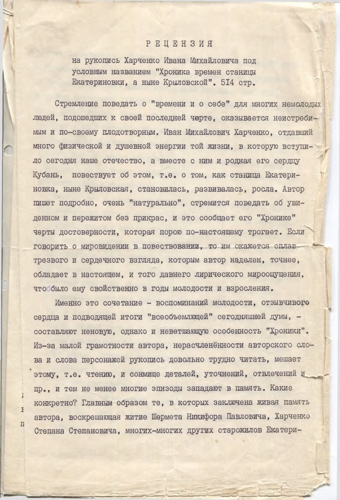

Рукопись · станица Екатериновская 1913–1994
Иван Михайлович Харченко (1913–1994), около 1983 года. 465 страниц семейной хроники: переселение рода на Кубань в 1830 году, детство автора в станице Екатериновской, раскулачивание и коллективизация, взрослая жизнь и служба.

Первая страница рукописи: рецензия кандидата филологических наук Б. Канашкина (Кубанский госуниверситет, 2 марта 1987 г.).
Рукопись охватывает почти весь XX век глазами одной семьи станицы Екатериновской (Крыловской): от переселения предков с Харьковщины на Кубань в 1830 году — до собственной взрослой жизни автора. Текст сплошной, без авторской разбивки на главы (сам рецензент называет его «сплошным необработанным текстом»); ниже — тематическое оглавление, составленное редакцией сайта, с ключевыми цитатами по каждому разделу.
Рукопись открывается рецензией литературоведа Б. Канашкина (Кубанский госуниверситет, 1987 год) и авторским предисловием, датированным 1972 и 1985 годами, с обратным адресом в Сочи.
История рода до переселения: хутор Высельцы (Высельни) на Харьковщине, принудительные переселенцы, делегация в Киев за новым предписанием и переезд всем хутором на Кубань в 1830 году, где Степан Степанович Харченко основал двор в станице Екатериновской.
«Так оставив на месте своего жительства могилы родных и близких, да одно воспоминание от хутора, в 1830 году все его жители и почти одновременно, переехали на земли кубани… Козак Харченко Стипан Стипанович остановился на берегу, тогда полноводной реки Ея…»
Застройка станицы, усадьба на широкую ногу, пожалование Степану Степановичу звания урядника. Рождение детей Настеньки, Луки, Харитины и Михаила — будущего отца автора рукописи, впоследствии трижды женатого.
Также упоминаются (с. 8–90): Федирко — «однослуживец Федирко, получившый ранение на учениях» (с. 30); Секлетия Мироновна Николаенко (Костенко) — «маминой родной сестры, Сиклетии Мироновне Николаенко» (с. 32).
Повседневная жизнь мальчика в станице: соседи Середы, конфискация их вальцовой мельницы (см. цитату в разделе «Коллективизация» ниже), опасный случай с найденным отцовским револьвером.
Также упоминаются (~с. 90–160): Москаленко — «Стипан Москаленко... с винтовкой, долго ходил понад загатой» (с. 121); Кирчак — «мне вчера встретился Стипан Стипанович Кирчак» (с. 155).
Организация сельхозтоварищества, затем колхоза имени Первой Конной Армии; слежка ГПУ за прошлым семьи; дома раскулаченных станичников отходят под колхозные нужды.
«…по письму Василя Косач, в соответствующие органы, появились частые вызовы, председателя товарищества Любезного, и полевода Харченко, в особый отдел ГПУ, по вопросу их прошлого.»
Также упоминаются (~с. 160–270): Мирошниченко — «приехавшым из Стансовета активистам, Мирошниченко и Запсенскому» (с. 181); Яковенко — «хозяйственник Яковенко доложыл» (с. 234); Коваленко — «к знакомой девушке, Шуры Коваленко» (с. 260); Ксенз — «с помощью комсомольцев, Цыклинского Вани и Ксенз Шуры» (с. 161).
Дорога Вани поездом в сторону Горловки, проводы родными, эпизоды в пути.
Также упоминается (~с. 270–330): Васильченко — «Сеня Васильченко, дружок Вани Харченко» (с. 311).
Работа автора в службе связи аэропорта, конфликты и интриги на службе в последние описанные годы.
Также упоминаются (~с. 330–465): Яценко — «управляющий... тов. Яценко, взял Ваню Харченко механником» (с. 334); Мащенко — «радио техниками были: Мащенко Леня» (с. 356); Мартыненко — «инспектору ОТК, Мартыненко Маше» (с. 357); Коноплев — «начальник службы связи Аэропорта Коноплев Андрей Герасимович» (с. 367); Кравченко — «начальника отдела связи... тов. Кравченко» (с. 419).
Полный текст рукописи (465 страниц) — в родовом архиве, публикация в открытом доступе не производится.
Если вы потомок Ивана Михайловича Харченко или его родственников, упомянутых в рукописи, и хотите получить доступ к полному тексту — напишите генеалогу-исследователю.
Расшифровка: Fundus, по сканам семейного архива. Родословие потомков Степана Степановича Харченко — в справочнике родов станицы Екатериновская.